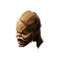
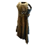
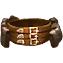

Облик Геноцида
Экипировка / Комплекты
Открыть в интерактивной вики →
| Редкость | Сет |
|---|
Части комплекта
 Штаны Гекатомбы Штаны Гекатомбы
Штаны Гекатомбы Штаны Гекатомбы
Обличье Преступника Обличье Преступника
Покров Человечества Покров Человечества
Жертвенный Пояс Жертвенный ПоясГде добыть


Бонус комплекта
Шанс уклонения +10
Шанс двойной атаки +6
Шанс двойной атаки +6